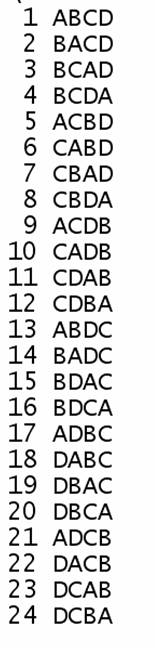

Code to be completed:
import java.util.*; public class Main {static ArrayList<String> permute(String s) {ArrayList<String> t = new ArrayList<String>(); return(t); } public static void main(String [] args) {int n,i,i1; String s = "ABCD"; ArrayList<String> t = permute(s); for(i=0;i<t.size();i++) {i1=i+1; if(i1<10) System.out.println(" " + i1 + " " + t.get(i)); else if(i1<100) System.out.println(" " + i1 + " " + t.get(i)); else System.out.println(" " + i1 + " " + t.get(i)); } System.out.println(); } } |
Required output:
